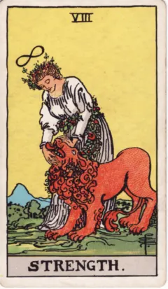
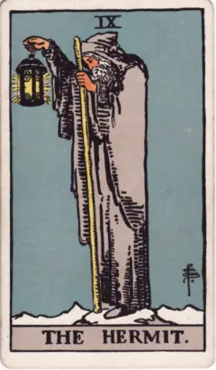
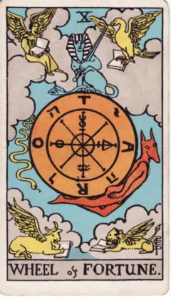
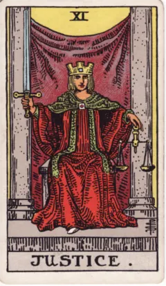

Раздел 8 · Все 22 старших аркана · Урок 29
Мера и перемены: Сила, Отшельник, Колесо, Правосудие
Какая сила не кричит и какими переменами невозможно командовать?
Сила и Отшельник действуют без нажима, Колесо показывает перемену, которую не выбирают, Правосудие — решение, за которое отвечают. Смотрим на руки на четырёх картах.
После урока Вы сможете: разделить одну свою ситуацию с помощью Колеса и Правосудия на то, что меняется само, и то, что решаете Вы, опираясь на детали рисунков.
Женщина и лев
На карте VIII женщина в белом склонилась над львом, и её руки — у его пасти. Ни меча, ни щита, ни следов борьбы. Цветочная гирлянда с её пояса обвивает и льва, а над головой женщины парит знак бесконечности — лежащая восьмёрка.
Уэйт описывает жест коротко: женщина закрывает пасть льва. Он замечает, что над её головой тот же знак жизни, что и над Магом (урок 27). Сила здесь не кричит: она действует прикосновением и спокойствием.
Два способа влиять без нажима
Отшельник, которого Вы, возможно, уже рассматривали в уроке 22, тоже ничего не завоёвывает. Он стоит на заснеженной вершине и держит фонарь со звездой.
Сила касается того, что рядом; Отшельник освещает дорогу и тем самым показывает её другим. Два глагола — «успокоить» и «прояснить». Приложите их к своему учебному вопросу: где нужно спокойно быть рядом с трудным, а где — сначала разглядеть путь?
Колесо, которым никто не правит
На Колесе Фортуны X наверху сидит сфинкс с мечом. С одной стороны вниз скользит змей, с другой поднимается красная фигура с головой шакала. По углам, в облаках, — четыре крылатых существа с книгами: человек, орёл, бык и лев. Уэйт называет их четырьмя живыми существами из видения пророка Иезекииля.
Кто был внизу, поднимается; кто наверху — сойдёт. Но колесо никто не вращает: сфинкс держит меч, а фигура с головой шакала не крутит обод, а поднимается вместе с ним, прижавшись к нему снизу. Ни одна рука не лежит на спицах. Это перемены, которыми невозможно командовать: их можно заметить и в них участвовать, но не повернуть колесо по своему желанию.
Весы и меч
Правосудие XI сидит между двумя колоннами, за спиной — завеса. Уэйт сам сравнивает эту сцену с Жрицей (урок 27). В одной руке прямой меч, в другой — весы.
Колесо меняет обстоятельства, Правосудие просит взвесить и решить. Мы не управляем всеми переменами, но отвечаем за собственное суждение о них. Карта говорит о соразмерности и последствиях, а не об исходе настоящего суда.
Номер зависит от системы
В колоде Уэйта–Смит Сила стоит под номером VIII, Правосудие — под номером XI. В марсельском порядке наоборот: Правосудие VIII, Сила XI. Уэйт пишет, что поменял эти карты местами по причинам, которые удовлетворяют его самого, и подробнее их не разбирает.
Поэтому «восьмой аркан» без названия системы может означать две разные карты. Называя номер, называйте и колоду. Подробнее о сравнении систем — в уроке 41.
Как рассмотреть четыре карты
Карты встречи — на следующем шаге, «Попробуем», все четыре. Там ищите руки: что они держат, чего касаются, что отпускают. У Колеса спросите иначе: вращает ли кто-нибудь колесо?
Сначала запишите в поле наблюдений одну деталь, которую можно показать пальцем, и только потом открывайте учебное прочтение.
Попробуйте сами
Работаем с изображением
Четыре карты — четыре ответа на вопрос «что делают руки?». Для каждой карты рассмотрите сцену и запишите в поле «Мои наблюдения», что держат или чего касаются руки (а на Колесе — вращает ли кто-нибудь колесо). Только после этого откройте учебное прочтение и вопрос карты.

Старший аркан 8
Сила
Показать учебное прочтение курса
Что нарисовано. Женщина касается пасти льва, над ней знак бесконечности.
Учебное прочтение курса. Сила действует через спокойствие и связь с живым. Уэйт ставит карту под VIII; в марсельском порядке здесь Правосудие.
Где мягкая настойчивость полезнее давления?
Уэйт об этой карте (Pictorial Key) ↗
Старший аркан 9
Отшельник
Показать учебное прочтение курса
Что нарисовано. Фигура на высоте держит посох и фонарь со звездой.
Учебное прочтение курса. Свет помогает различать путь и может быть виден другим. Уединение связано с поиском и зрелостью; оно не обязательно означает беду.
Что я могу прояснить, временно замедлившись?
Уэйт об этой карте (Pictorial Key) ↗
Старший аркан 10
Колесо Фортуны
Показать учебное прочтение курса
Что нарисовано. Колесо окружено фигурами; по углам крылатые существа с книгами.
Учебное прочтение курса. Меняется положение участников, остаётся цикл. Карта помогает различать участие в событиях и попытку полностью ими управлять.
Что зависит от меня, а что сейчас меняется само?
Уэйт об этой карте (Pictorial Key) ↗
Старший аркан 11
Правосудие
Показать учебное прочтение курса
Что нарисовано. Фигура держит весы и прямой меч; за ней завеса.
Учебное прочтение курса. Соразмерность требует различения и решения. Образ ответственности и последствий сам по себе не сообщает исход реального суда.
Какие факты и интересы нужно взвесить?
Уэйт об этой карте (Pictorial Key) ↗Проверим себя?
Ошибиться здесь не страшно: ответ проверяется сразу, а подсказки ничего не отнимают — ни баллов, ни отметок. К каждому варианту — своё пояснение; если и со второй попытки не получилось, откроется подсказка и верный ответ, и вопрос будет считаться разобранным.
Выберите ответ — он проверится сразу.
А как бы Вы это объяснили?
Выберите ситуацию, где что-то зависит от Вас, а что-то — нет. Опираясь на деталь Колеса, запишите, что в ней меняется само; опираясь на деталь Правосудия — что Вы можете взвесить и решить. Затем выберите Силу или Отшельника для первого шага и объясните выбор одной фразой.
Начните любую строку — подсказка в поле исчезнет, как только Вы начнёте писать.
Вопрос перед образцом. Кто на Колесе вращает обод — и что держат руки Правосудия?
Один из возможных ответов откроется здесь, когда Вы напишете хотя бы строку или отметите, что обдумали вопрос без записи.
Посмотреть один из возможных ответов
Моя ситуация: в группе сменился преподаватель. Меняется само (Колесо, деталь): фигуры на ободе поднимаются и опускаются, а колесо никто не вращает — расписание и требования решаю не я. Взвешиваю и решаю (Правосудие, деталь): весы в руке — сколько времени я отдаю предмету и о чём спрошу на консультации. Первый шаг — Отшельник: фонарь на вершине напоминает, что сначала стоит прояснить, что теперь требуется.
Что в образце есть, чего нет у Вас? А что есть у Вас, чего в нём нет?
Урок будет отмечен, когда все три вопроса разобраны (с подсказкой тоже считается) и есть запись или отметка «без записи».
Если хочется прочитать дальше
- A. E. Waite. The Pictorial Key to the Tarot, часть II: VIII Strength, IX The Hermit, X Wheel of Fortune, XI Justice.
- Урок 41 — как разные системы нумеруют Силу и Правосудие.
A. E. Waite · The Pictorial Key to the Tarot
Текст 1910 года к системе Уэйта–Смит; иллюстрации Памелы Колман Смит.